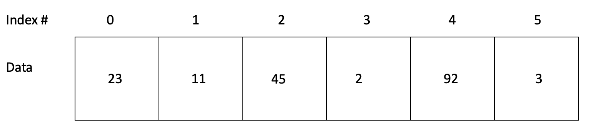
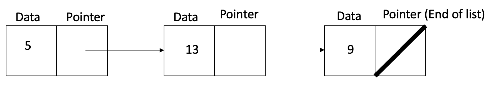
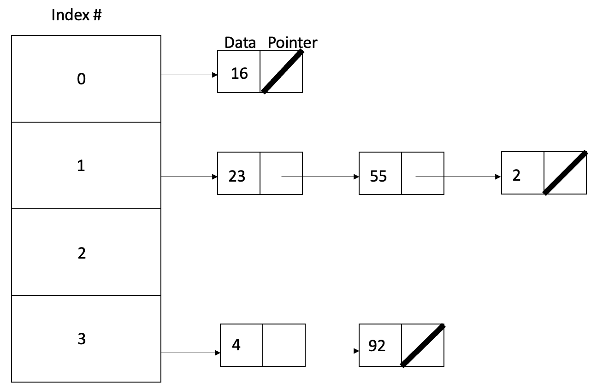
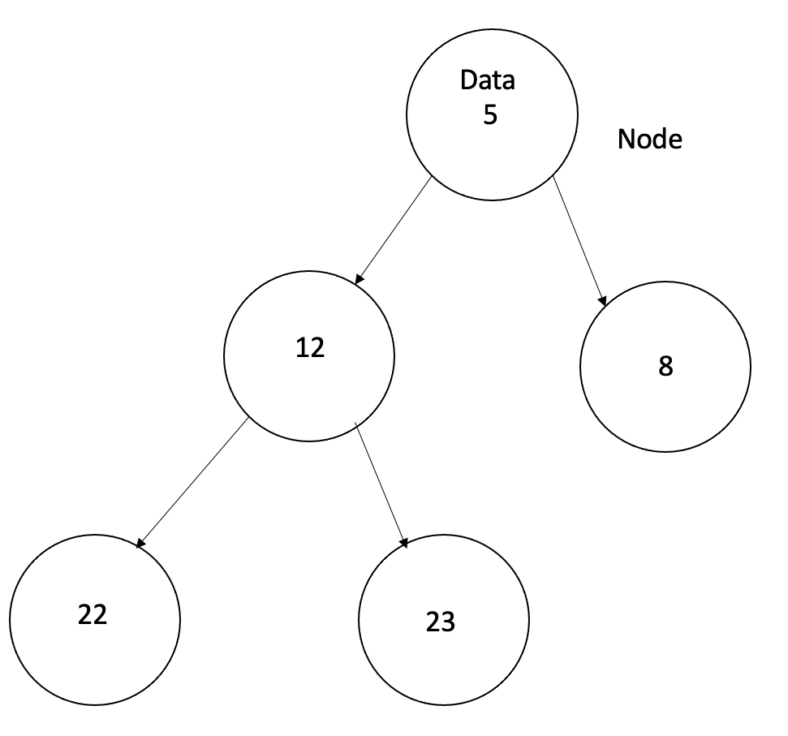

Data Structures
Data structures within programming is undoubtedly one of the most important aspects of programming. Not only do they allow for better organization of data, but they also help the programmer become better at being able to solve difficult problems. For example, let's say that someone was asked with the task of organizing and creating a database containing the information for students at a high school. The programmer would need a way to organize the data so that the data can be accessed fast and efficiently. Data structures allow for such things to happen as data can be navigated at different types of speeds. Much like other things in programming, the data structure you use is dependent on many things. Some of the things that you should consider when picking the right data structure are:
- How much data am I organizing?
- Does speed matter in accessing data?
- What kind of data is being organized?
- What programming language am I using?
Types of Data Structures
No matter what your requirements or abilities may be, it is definitely worth learning about all data structures so that you are able to implement the one that best suits your program. There are tons of data structures, but the ones that I have picked I believe are the most important ones to utilize. For the purposes of simplicity, all of the code snippets will be shown in the C++ language.
Arrays
If you have ever programmed in your life, you have definitely used arrays before. There are the most simple form of a data structure as they are very easy to use and access data. They way an array works is by having multiple elements of a data type that can be accessed, changed, and depending on what programming language you are using, deleted. Arrays are typically initialized by explicitly showing the data type, and using an integer to indicate the amount of elements in the array like so:
int array[6];
The picture below is an array of size 6. Notice that the index numbers start at 0 as the first element of an array is 0.
While it may be a very simple and easy to use data structure, it is not very efficient to use. However unless the amount of data in use is large, arrays are still a good structure to use.
Linked Lists
Linked lists is one of the first complex data structures that a programmer will learn. The reason that it is more complicated is because the way that data is accessed is different from an array. While a linked list is similar to an array, an array requires the user to explicitly state the size of the array. A linked list is more dynamic and you can make it as big as you want without knowing the amount of data that will need to be created. Instead of using an index number to access data, you need to find the data by iterating through a linked list chained together by pointers. Here's a visualization:
Coding for a linked list depending on what language you are using may involve the need for structs, or an object in a programming language. While an array can be created by using brackets, linked lists need to have an object of a linked list already existing. Here's a snippet of code where a struct called linkedList is created, and how the elements have data assigned to them.
struct linkedList {
int data;
linkedList *next;
};linkedList *list = new linkedList;
list->data = 5;
list->next = new linkedList;
list->next->data = 7;
Now there are more efficient ways to create a linked list, and while it may seem like using a linked list seems tedious, the speeds at which linked lists operates are very efficient.
Hash Tables
Hash tables are definitely one of the most complex data structures. At surface level, a hash table looks similar to an array, however it is more of a combination of an array and a linked list.
As you can see, a hash table works like an array where there is a list of elements that can be accessed through a number, but each box is also a pointer to a linked list. The purpose of a hash table is to work with large amounts of data, even more so than a linked list. Another aspect of a hash table is that the index in which an element is inserted into a hash table can be determined a number of different ways. Formulas are typically made to determine a position of an element in a hash table. Here is a simplified version of how it would be coded. Assume there is a struct named hashTable and linkedList like the previous example.
hashTable **table;
table = new hashTable*[3];
table[0] = new linkedList;
table[0]->data = 13;
Heaps
A heap is a data structure that uses a tree in order to contain data. The illustration below will show exactly what I mean.

The way a heap works is that there is a root node at the very top, and each node can have 2 child nodes. Each child node can have 2 child nodes of their own and so on. Another feature about them is that the tree has to be balanced, and a new node is put from left to right. In the example picture shown above, if a new node were to be added, it would be the left child of the right-mode node. A heap is also organized as a min-heap or a max-heap. A min-heap (shown above) organizes data from the lowest value at the main root, and each child of a root is larger or equal to it. A max-heap is just the opposite of what a min-heap is. While I could provide code for a heap, I feel that it is not necessary as the hardest part of using a heap is organizing, and not necessarily how to code it.